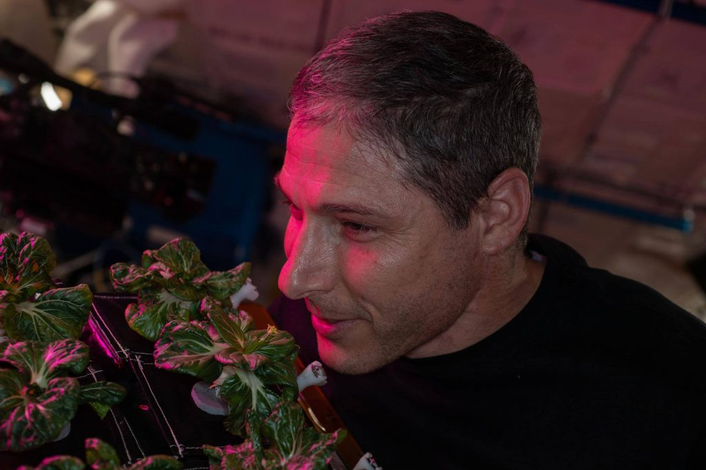

အင်္ဂါဂြိုလ်နဲ့ အခြား ဂြိုလ်တွေဆီ ခရီးနှင်မယ့် အာကာသ ယာဉ်မှူးတွေ အနေနဲ့ ကမ္ဘာပေါ်မှာ ရှိတဲ့သူတွေ လုပ်ကိုင်နေတဲ့ ကိစ္စတချို့ကို ခရီးစဉ်အတွင်း ပြုလုပ်နိုင်ဖို့ လိုပါတယ်။ ဥပမာ သူတို့ဝတ်တဲ့ အဝတ်အစားတွေကို ကိုယ်တိုင်ဖွတ်လျှော်တာ မျိုးကစပြီး စားမယ့်သောက်မယ့် အပင်တွေကို ကိုယ်တိုင်စိုက်ပျိုးတာ အထိပေါ့။ ဒီလိုလုပ်ကိုင်နိုင်ခြင်းအားဖြင့် ခရီးစဉ်အတွက် ကမ္ဘာပေါ်ကနေ သယ်သွားရမယ့် စားနပ်ရိုက္ခာနဲ့ အခြားထောက်ပံ့ရေး ပစ္စည်း ပမာဏလဲ နည်းသွားမှာ ဖြစ်ပါတယ်။
အမေရိကန် ပြည်ထောင်စုက နာဆာ အဖွဲ့ကြီးဟာ အာကာသထဲမှာ အာကာသ ယာဉ်မှူးတွေ ကိုယ်တိုင်အဝတ်လျှော်နိုင်မယ့် နည်းလမ်းကို တီထွင်နေပါတယ်။ နောက်ပြီး ပြီးခဲ့တဲ့ ဇွန်လက စလို့ ISS ပေါ်က ယာဉ်မှူးတွေဟာ အသီးအနှံတမျိုးကို စတင်ပြီး စမ်းသပ်စိုက်ပျိုးနေပြီ ဖြစ်ပါတယ်။ ဒီအပင် အမျိုးအစားကို အသီးအနှံတွေ အာကာသထဲ စမ်းသပ်စိုက်ပျိုးကြည့်ပြီးမှ စကာတင် ရွေးချယ်ခဲ့တာပဲ ဖြစ်ပါတယ်။ ဒီရွေးချယ်လိုက်တဲ့ အပင်ကတော့ ငရုတ်သီးပင်ပဲ ဖြစ်ပါတယ်တဲ့။ စမ်းသပ်မှု အောင်မြင်တယ် မမြင်ဘူး ဆိုတာကတော့ နောက် ၄ လ ကြာမှပဲ သိရပါလိမ့်မယ်။
ဒီငရုတ်သီးစေ့တွေကို အပင်ဖောက်တာကိုတော့ ကမ္ဘာမြေပေါ်မှာ ပြုလုပ်ခဲ့တာ ဖြစ်ပါတယ်။ အပင်ပေါက်တော့မှ သန်စွမ်းတဲ့ ပျိုးပင်လေးတွေကို စကာတင် ရွေးချယ်ပြီး ISS ပေါ်ကို ပို့ဆောင်ပေးတာပဲ ဖြစ်ပါတယ်။ နာဆာဟာ အရင်ကလဲ ဆလပ်ရွက်တွေကို အာကာသစခန်းပေါ်မှာ စိုက်ပျိုးပြီး အာကာသ ယာဉ်မှူးတွေ စားသုံးခဲ့ ဖူးပါတယ်။

အာကာသထဲ အပင်စိုက်ရတာ တကယ်တော့ မလွယ်ပါဘူး
နာဆာသိပ္ပံ ပညာရှင်တွေဟာ ပထမ ငရုတ်စေ့ ၄၈ စေ့ကို မြေပြင်ပေါ်မှာ အရင် အပင်ဖောက်ပါတယ်။ မြေအဖြစ် ရွှံ့စေးကို အသုံးပြုပြီး ဓါတ်မြေဩဇာကတော့ ဒီစမ်းသပ်မှုအတွက် အထူးဖော်စပ်ထားတဲ့ မြေဩဇာကို အသုံးပြုထားပါတယ်။ ဒါတွေကို အထူးပြုလုပ်ထားတဲ့ ပျိုးခွက်တွေထဲမှာ စိုက်ပျိုးတာ ဖြစ်ပါတယ်။ အာကသစခန်းပေါ် ရောက်တော့ ဒီခွက်လေးတွေကို အထူးစီမံထားတဲ့ အဆင့်မြင့် အပင်ဇီဝပတ်ဝန်းကျင် မှာ ရှင်သန်ကြီးထွားစေမှာ ဖြစ်ပါတယ်။ဒီ အဆင့်မြင့် ဇီဝပတ်ဝင်းကျင်ကို အာကာသမှာ အပင်စိုက်ဖို့ သီးသန့်တီထွင် ထားတာဖြစ်ပါတယ်။ သူ့မှာဆိုရင် အပင်ရဲ့ အခြေအနေတွေကို ၂၄ နာရီ စောင့်ကြည့်နိုင်မယ့် အာရုံခံ ကိရိယာပေါင်း ၁၈၀ ပါရှိပါတယ်။ ဒီအာရုံခံ ကိရိယာတွေက ရရှိတဲ့ အချက်အလက်တွေကို အသုံးချပြီး အပင်ရဲ့ အလင်းရောင်၊ ရေ၊ အာဟာရ ရရှိမှုတွေ အားလုံကို အသေးစိတ် ထိန်းချုပ်နိုင်ပါတယ်။
ဒီစိုက်ပျိုးထားတဲ့ ငရုတ်ပင်တွေကို နောက် ၄ လနေရင် စတင် စားသုံးနိုင်မှာ ဖြစ်ပါတယ်။ အချို့ကို အာကာသယာဉ်ပေါ်မှာ စားသုံးပြီး၊ ကျန်တာတွေကိုတော့ ကမ္ဘာမြေပေါ်ကို ပြန်သယ်ဆောင်လာပြီး လိုအပ်တဲ့ စမ်းသပ်မှုတွေ ဆက်လက်ပြုလုပ်သွားမယ်လို့ နာဆာက သတင်းထုတ်ပြန်ချက်မှာ ရေးသားထားပါတယ်။
ဘာ့ကြောင့် ငရုတ်သီးကို ရွေးရတာလဲ
နာဆာဟာ ဒီစမ်းသပ်မှုမှာ အသုံးပြုဖို့ ငရုတ်သီးမျိုး နှစ်ဒါဇင်ကျော်ကို အချိန် ၂ နှစ်လောက်ကြာအောင် စမ်းသပ်ခဲ့ပါတယ်။ နောက်ဆုံးတော့ နယူးမက်ဆီကို ဒေသက ငရုတ်သီး မျိုးတစ်မျိုးကို အာကာသထဲ စေလွှတ်ဖို့ ရွေးချယ်ခဲ့ပါတယ်။အာကာသထဲမှာ အပင်စိုက်ရင် ကြုံတွေ့ရမယ့် အဓိက ပြဿနာကတော့ နေရာ အခက်အခဲပဲ ဖြစ်ပါတယ်။ စိုက်ပျိုးမယ့် အပင်ဟာ နေရာ သိပ်မယူတဲ့ အပင်ဖြစ်ဖို့ လိုအပ်သလို အရမ်းဂရုစိုက်ရတဲ့ အပင်မျိုးလဲ မဖြစ်ဖို့ လိုအပ်ပါတယ်။
ငရုတ်သီးမှာ အဟာရ ပေါင်းစုံနဲ့ ဗိုက်တာမင် စီ ဓါတ်တွေ ပေါများစွာ ပါဝင်ပါတယ်။ နောက်ပြီး အရောင်ကလဲ တောက်တောက်လေးမို့ အာကာသယာဉ်မှူးတွေရဲ့ စိတ်ကို တက်ကြွလန်းဆန်း စေမယ်လို့ ယူဆကြပါတယ်။ နောက်ပြီး အာကာသထဲ ရောက်နေတဲ့ အာကာသယာဉ်မှူးတွေနဲ့ အနံ့နဲ့ အရသာ ခံစားနိုင်မှုကလဲ ထုံထိုင်းသွားတဲ့ အတွက် အရသာ စပ်စပ်လေးက သူတို့ရဲ့ အရသာ ခံစားနိုင်မှုကို အထောက်အကူ ဖြစ်စေမှာ ဖြစ်ပါတယ်။